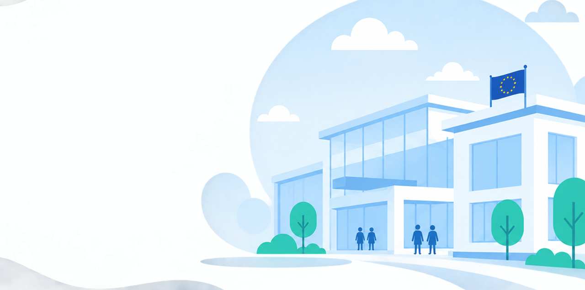
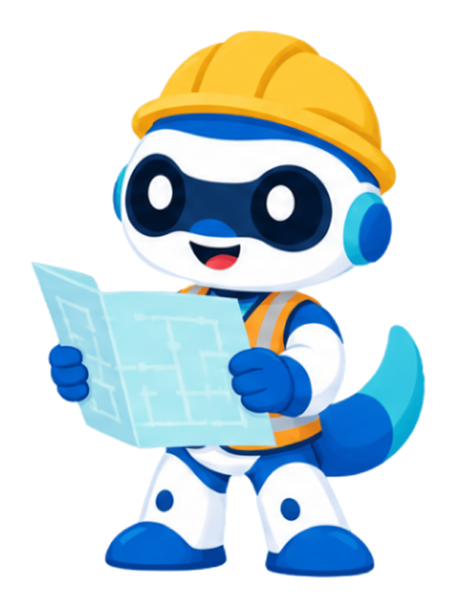
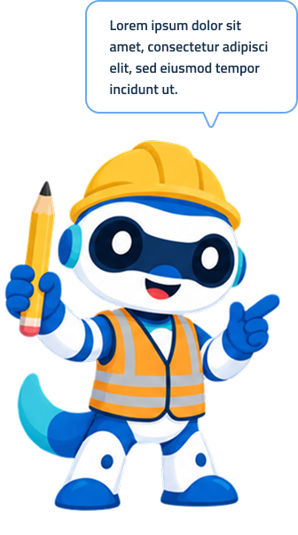
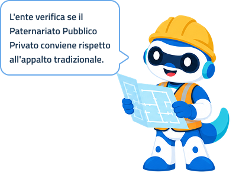
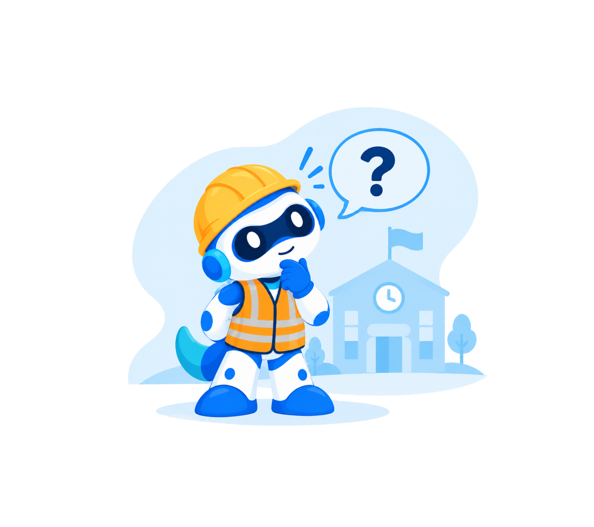

Consulta le schede di sintesi
Al termine ritrovi in un'unica scheda i punti chiave e i riferimenti utili, pronti da consultare o condividere.

Guida al paternariato pubblico privato
Una guida passo passo pensata per pubbliche amministrazioni e operatori privati, per orientarsi tra norme, fasi e forme contrattuali del paternariato pubblico privato.

Tre fasi, dalla scelta del profilo alle schede di sintesi finali. La seconda comprende le 6 tappe del percorso informativo.

Al termine ritrovi in un'unica scheda i punti chiave e i riferimenti utili, pronti da consultare o condividere.
Indica se sei una pubblica amministrazione o un soggetto privato: i contenuti del percorso si adattano al profilo che scegli.
Attraversa il percorso una tappa alla volta: in ogni aula trovi definizioni, riferimenti normativi, ruoli e forme contrattuali del PPP, spiegati passo dopo passo.
Un servizio del Ministero dell'Istruzione e del Merito
Ministero dell’Istruzione
e del Merito
Basata sul Codice dei contratti, sulle linee guida MEF e sui riferimenti EPEC, aggiornati all'ultimo Correttivo.
Realizzata dalla pubblica amministrazione per enti, imprese e cittadini. Accesso libero, senza costi e senza registrazione.
Norme, sigle e procedure complesse tradotte in parole semplici, anche per chi affronta il PPP per la prima volta.
Dalla verifica di convenienza alla chiusura del contratto: le 7 fasi che scandiscono un progetto di paternariato pubblico privato per l'edilizia scolastica.
L'ente verifica se il PPP conviene rispetto all'appalto tradizionale.
Si analizza il patrimonio esistente, si stima il fabbisogno di investimento e si confronta il costo di un appalto tradizionale (PSC) con quello di un PPP attraverso una griglia MCA a più criteri. Solo se il confronto è favorevole si procede.

Percorso informativo e gratuito, pensato anche per chi si avvicina per la prima volta al PPP: non sostituisce una consulenza legale.
I riferimenti su cui si basa il percorso informativo e il configuratore.
D.Lgs. 36/2023 — disciplina generale del paternariato pubblico privato.
Criteri di valutazione economico-finanziaria per i progetti PPP nel settore scuola.
European PPP Expertise Centre — riferimento concettuale per il configuratore.
Consulta direttamente le fonti ufficiali:
FAQ
Qui trovi risposte alle domande più frequenti sul Partenariato Pubblico Privato per la realizzazione e la gestione delle scuole.
